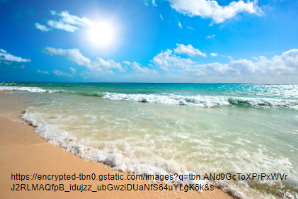
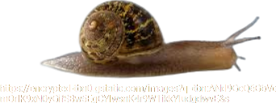
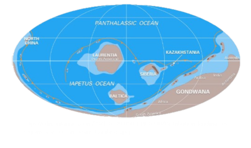
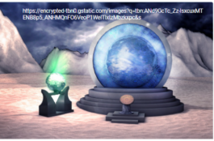
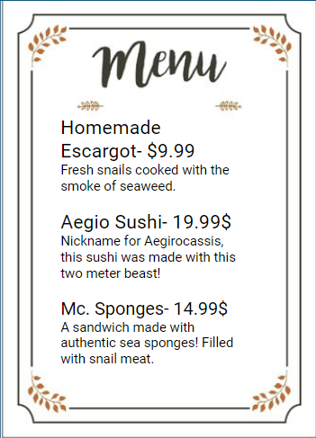
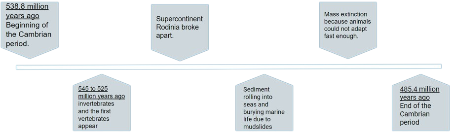
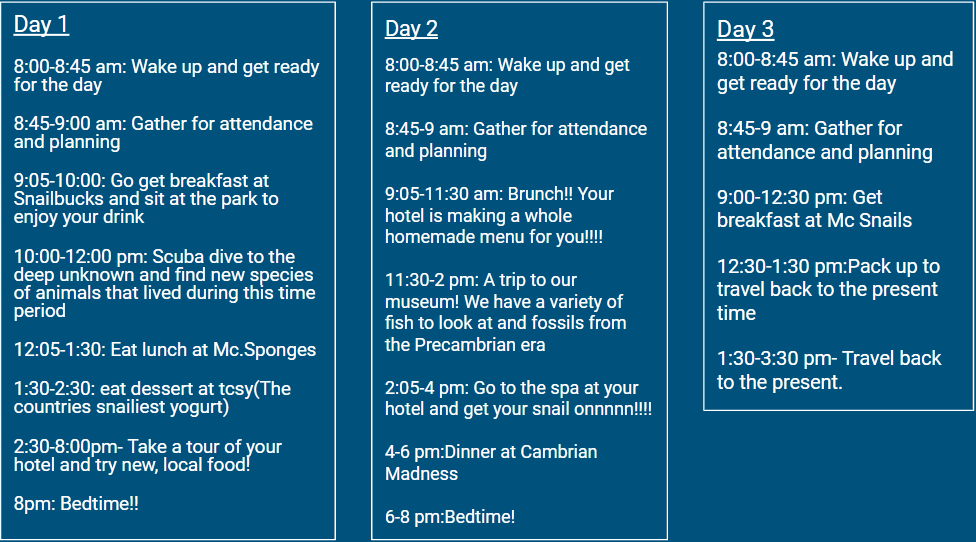
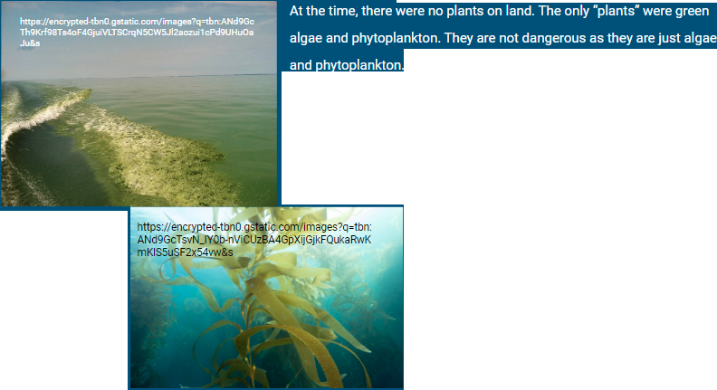
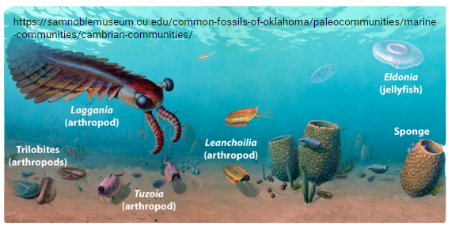

Cambrian Travel Time™
Brought to you by…
Jaylin L., Ava E., and Krish R.
Jaylin L., Ava E., and Krish R.
About The Cambrian Era:
If your family wanted to visit the Cambrian period, you would find a variety of sea animals and “plant” life. The Cambrian period started 538.8  million years ago and ended 485.4 million years ago. It came after the Precambrian Era and before  the Ordovician period. You are and your family will be safe since there are no land animals and no dangerous sea animals.
Where will you be going?
You will be visiting the supercontinent Gondwana! If you were to try to go to the North America, you would be underwater.
Climate
Since our temperature reader has recently gone out of order and the climate in the Cambrian period is not well known, you should take a light jacket just in case. Previous records tell us that the average temperature during the cambrian period was 22 °C (72 °F).
Why The Cambrian Travel Agency???
The Cambrian Travel Time Agency is a perfect agency to go to if you want a relaxing cambrian experience. We have a variety of activities and a good restaurant near you! We also have a wonderful hotel which includes 5 star spa and a Snailbucks cafe.
Cambrian Madness Menu
We have a variety of delicious meals for everyone!

Timeline/Significant Events

Itinerary
Plants in the Cambrian period

Animals of the Cambrian period
There were many sea animals such as trilobites, arthropods, mollusks, and surprisingly, sea sponges! The dominant animal was an arthropod. Its name is the Anomalocaris. It is safe as it does not eat prey as big as humans.
Sources:
Background{kind=link}
Johnson, Markes E. , Robison, Richard A. and Crick, Rex E.. "Cambrian Period". Encyclopedia Britannica, 21 Apr. 2023, https://www.britannica.com/science/Cambrian-Period. Accessed 28 April 2023.
“Paleoclimate.” Encyclopædia Britannica, Encyclopædia Britannica, https://www.britannica.com/science/Cambrian-Period/Paleoclimate. Accessed 27 Apr. 2023.
“Cambrian Period | Natural History Museum.” Natural History Museum |, https://natmus.humboldt.edu/exhibits/life-through-time/visual-timeline/cambrian-period. Accessed 27 Apr. 2023.
“Cambrian Period-541 to 485.4 Mya (U.S. National Park Service).” National Parks Service, U.S. Department of the Interior, https://www.nps.gov/articles/000/cambrian-period.htm. Accessed 27 Apr. 2023.
Scotese, Christopher. “Early Cambrian Climate.” Early Cambrian Climate, http://www.scotese.com/ecambcli.htm. Accessed 27 Apr. 2023.
“The Cambrian Period: What You Need to Know about the Explosion of Life.” Fossils Facts and Finds.com, https://www.fossils-facts-and-finds.com/cambrian_period.html. Accessed 27 Apr. 2023.
Cutting, Grace (2021) "Simulating Cambrian Climate: The Significance of Atmospheric CO2 Concentration and Continental Position," Ursidae: The Undergraduate Research Journal at the University of Northern Colorado: Vol. 10: No. 1, Article 2. https://digscholarship.unco.edu/cgi/viewcontent.cgi?article=1245&context=urj. Accessed 27 Apr. 2023.